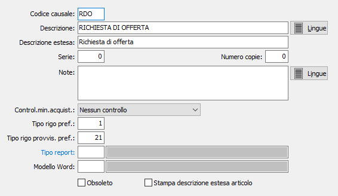

Causali richieste
Le causali richieste vengono utilizzate al momento dell’inserimento di un documento e ne determinano la tipologia.
E’ possibile gestire più causali di richieste, e più numerazioni progressive (serie).

CODICE: Codice alfanumerico di 3 caratteri, a libera scelta dell'utente, per individuare la causale attiva. Sul campo sono attive le funzioni di ricerca (F9) sulla tabella stessa.
DESCRIZIONE: Campo alfanumerico di 30 caratteri per inserire la descrizione della causale attiva. Questa descrizione viene stampata sui documenti se il programma di stampa lo prevede.
DESCRIZIONE ESTESA: Campo alfanumerico di 60 caratteri per inserire la descrizione estera della causale attiva ad uso interno dell’utente. Questa descrizione non viene stampata sui documenti ma viene visualizzata nelle viste.
SERIE: Campo numerico per inserire il numero di serie del documento. Ciascuna serie attiva una propria numerazione di documenti. E’ necessario, in fase di immissione del documento, per proporre automaticamente e correttamente il numero progressivo del documento acquisito dalla tabella protocolli.
NUMERO COPIE: Indicare il numero di copie da stampare, se zero saranno stampate le copie previste sull'anagrafica del cliente.
NOTE: Campo note a disposizione dell’utente.
CONTROLLO MIN. ACQUISTABILE: Indica se e quale controllo utilizzare sul documento relativamente alla quantità minima acquistabile del prodotto:
Nessun controllo
Controllo non vincolante
Controllo vincolante
TIPO RIGO PREF.: Campo numerico che indica il tipo rigo da proporre sulle richieste emesse con questa causale.
TIPO RIGO PROVVISORIO PREF.: Campo numerico che indica il tipo rigo da proporre sulle richieste emesse con questa causale e relative a fornitori provvisori.
TIPO REPORT: consente di specificare un tipo di report specifico per i documenti che saranno emessi utilizzando questa causale. Sul campo sono attive le funzioni di ricerca (F9).
STAMPA DESCRIZIONE ESTESA ARTICOLO: Indica se sulla richiesta deve essere riportata e stampata la descrizione estesa dell'articolo, casella con segno di spunta.
MODELLO WORD: Indica l'eventuale codice del modello da utilizzare per la stampa tramite Word.
OBSOLETO: flag attivabile dall’utente per inibire il possibile utilizzo dell’elemento di tabella in esame nelle successive transazioni.